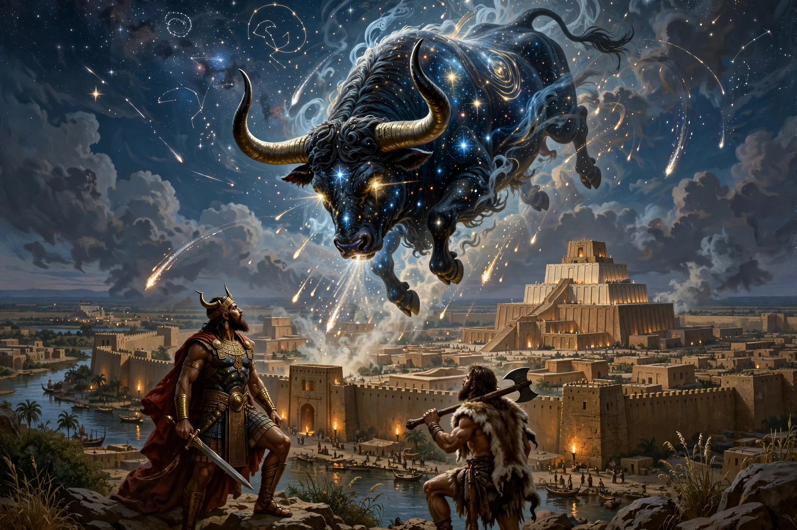

Bull of Heaven
The Bull of Heaven (Sumerian: Gu4-an-na; Akkadian: Alû) is a mythical beast fought by the hero Gilgamesh in the Epic of Gilgamesh. It is the constellation known today as Taurus. The bull was sent by the goddess Ishtar (Inanna) against Gilgamesh after he rejected her advances.

| Bull of Heaven | |
|---|---|
| Sent by | Ishtar (Inanna), at the urging of her father Anu |
| Slain by | Gilgamesh and Enkidu |
| Constellation | Taurus |
| Source | Epic of Gilgamesh, Tablet VI |
In the epic
After Gilgamesh and Enkidu triumph over Humbaba, the goddess Ishtar proposes marriage to Gilgamesh; he refuses her with a catalogue of her past lovers' fates. Enraged, Ishtar ascends to heaven and demands that her father Anu give her the Bull of Heaven to destroy Gilgamesh and Uruk, threatening to raise the dead if refused. Anu relents after she stores up seven years of grain against the famine the bull's rampage will cause.
The bull descends and devastates the land: with its breath it dries up rivers and blasts pits into the earth into which hundreds of men fall. Enkidu seizes the bull by the tail (in some versions by the horns), and Gilgamesh drives his sword into its neck. The heroes offer the bull's heart to Shamash; Enkidu tears off the bull's hindquarter and hurls it at Ishtar in contempt. In consequence, the gods decree that one of the two heroes must die for the slaying of the bull and of Humbaba — and Enkidu sickens and dies, driving Gilgamesh to his quest for immortality and the story of the flood survived by Utnapishtim, counterpart of Noah.
Origins
The episode descends from the Sumerian poem Gilgamesh and the Bull of Heaven. In Mesopotamian astronomy the bull was the constellation Taurus, and its horns were hung in the temple of the moon god, Gilgamesh's patron deity, at Uruk.